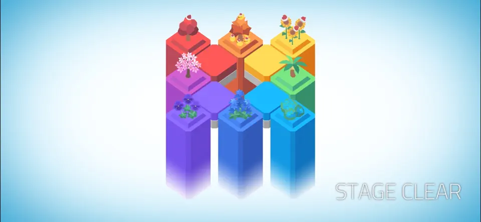
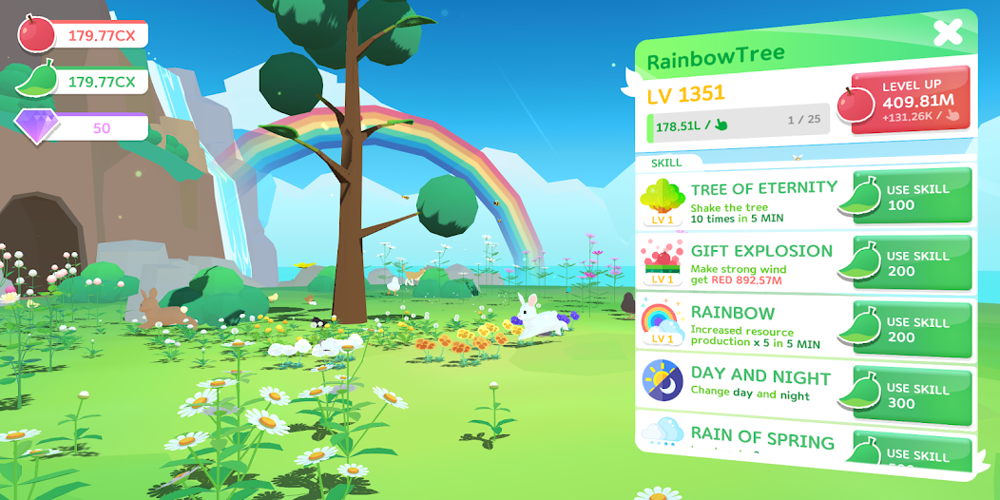

GAME01

Colorzzle
색채 기반 모바일 퍼즐게임입니다. iOS, Android, Steam에서 플레이할 수 있습니다.
게임 아트 실무 · 빛과 표면의 연구 · 다음 세대를 위한 강의. 빛과 그림자 사이, 아직 드러나지 않은 가능성을 만듭니다.
0은 지금 맞춘 기본 모습입니다.
오른쪽으로 밀어 변화를 더해보세요.
직접 만든 게임을 소개합니다.

색채 기반 모바일 퍼즐게임입니다. iOS, Android, Steam에서 플레이할 수 있습니다.

탭으로 나무를 키우고 꽃과 동물을 모으는 힐링 방치형 게임입니다. 다양한 기후와 낮밤, 비와 눈으로 달라지는 풍경 속에서 나만의 작은 생태계를 가꿉니다.
직접 조작하며 살펴보는 실험과 제작을 돕는 도구들.
색을 고르고, 빛과 초점이 만드는 차이를 비교합니다.
표면의 성질과 공간이 보이는 원리를 살펴봅니다.
배치와 시각적 단서가 만드는 차이를 실험합니다.
Qt 버전은 Max 2026용 시험판입니다. Max 2025 이하에서는 기존 MAXScript를 선택해 주세요.
실행 · Max에서 Scripting → Run Script로 .ms 파일을 여세요.
ZIP을 모두 풀고 파일·폴더 위치를 그대로 유지하세요. Qt 6종 묶음은 PenumbraTools.ms, 개별 ZIP은 해당 도구의 .ms를 실행합니다.
선택한 오브젝트의 UV를 1K · 2K · 4K PNG로 일괄 저장합니다.
가까운 UV 정점을 평균 위치로 모아, 겹친 UV 아일랜드를 정렬합니다.
MK Toon 아웃라인용 스무딩 노말을 정적 복사본의 UV7에 베이크합니다.
직선 위의 불필요한 정점을 찾아 정리합니다.
피벗 · 원점 · 축 방향을 정리해, 선택한 오브젝트를 FBX로 내보냅니다.
여러 FBX를 현재 씬에 모으거나, 파일별로 새 씬에 가져옵니다.
빛과 재질, 게임의 표현 방식을 탐구합니다.
홍익대학교 영상·커뮤니케이션대학원 · 게임 콘텐츠 전공
A Study on Perceptual Transition Points between Realistic and Stylized Representations in PBR Textures · 지도교수 김현석
DiGRA-K · 국제디지털게임연구학회 한국지회
《디지털게임연구》 2025년 겨울호 (제1권 2호), pp.13–36
한국게임학회 · 2025 추계 학술대회
한국게임학회 · 2024 추계 학술대회
제작 경험을 나누고, 각자의 표현을 찾아가는 과정을 함께합니다.
정보미디어학부 게임콘텐츠과 · 겸임교수
AI콘텐츠시스템설계, 바이브코딩
영상학부 게임그래픽디자인전공 · 강사
UI/UX디자인
경기게임아카데미 · 아트파트 멘토
인디게임팀 대상 아트 멘토링
산학교사
미술 기초 ~ 포트폴리오 지도
멘토
졸업생 특화 프로그램 포트폴리오 멘토링
게임스쿨 · 강사 / 겸임교수
3D그래픽연출, 3D모델링기초, 2D게임그래픽포트폴리오
미술학석사 (게임 콘텐츠) · 2026.08.21 학위수여 GPA 4.28 /4.5
미술학사
게임 아트와 테크니컬 아트 현장에서 이어온 경험.
아트팀
다크판타지액션 로그라이크 '레메게톤' (Unity)
배경모델링, 레벨디자인, 셰이더이펙트애니메이션
아트팀
글로벌 블록체인게임 'Cosmic Bomber' (Unity)
모델링, 레벨디자인, 이펙트
AD
'듀윙', '롯데월드 메타버스' 등 메타버스 프로젝트 (Unity)
아트디렉팅, 모델링, 이펙트
AD
퍼즐게임 'Colorzzle'(59만 DL), 클리커게임 'Rainbow Tree' (Unity)
아트디렉팅, 모델링, 이펙트, UI
개발3실 · 선임
MMORPG 프로젝트 (Unreal)
배경모델링, 레벨디자인
로키스튜디오 · AD
'TapSonic Top', 'Animal Symphony' 등 (Unity)
아트디렉팅, 배경모델링, 레벨디자인, 이펙트, 애니메이션
레인보우스튜디오 · 대리
MMORPG 'R2'
배경모델링, 레벨디자인
개발5팀
쿼터뷰 MMORPG '에다전설'
배경모델링, 레벨디자인, 이펙트
게임 제작과 연구로 받은 수상·표창·장학 내역.
학술대회 우수논문 수상을 통한 본교 명예 선양 (총장 박상주)
3DGS기반 게임 제작 교육의 실행 가능성 탐색: 게임 특성화 고등학교 사례 연구
홍익대학교 영상·커뮤니케이션대학원 장학생 선정
Colorzzle · 부산인디커넥트페스티벌(BIC) 탁월한 캐주얼 부문 수상
Color Puzzle (성남산업진흥재단)
빛과 그림자가 만나는 경계, Studio Penumbra.
Studio Penumbra는 빛과 그림자가 만나는 경계, '반그림자(penumbra)'에서 이름을 딴 1인 크리에이티브 스튜디오입니다.
실시간 그래픽스와 게임 아트, 그리고 웹 위에서 돌아가는 작은 인터랙티브 실험들을 만듭니다. 3D 모델링과 테크니컬 아트부터 셰이더·렌더링 연구까지, 한 픽셀의 음영까지 들여다보는 일을 좋아합니다.
게임과 그래픽스를 만드는 실무 , 더 나은 표현을 찾는 연구 , 그리고 배운 것을 나누는 강의 — 이 세 가지를 함께 이어가고 있습니다.